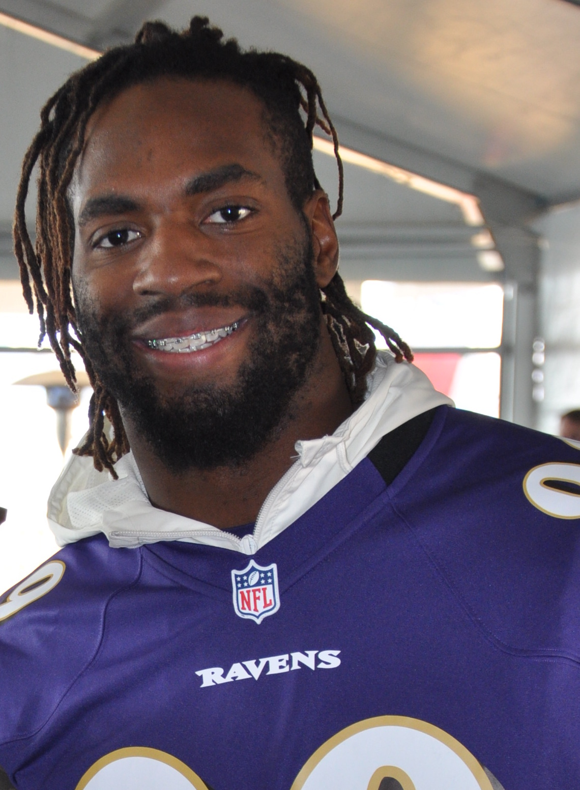
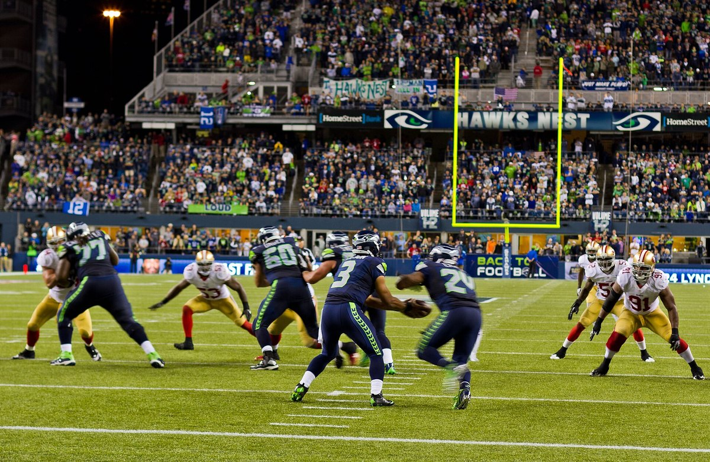

49ers Cut Matt Judon and Activate Mykel Williams for Seattle
Two weeks, 14 snaps and one tackle, and the Judon experiment is over. The guy who replaces him on the roster is the one we drafted 11th overall, and he's been losing his mind waiting for this.

I was in line at the gas station on El Camino when my phone buzzed, and I'll be honest, I almost didn't look. Saturday transactions are usually nothing. A tight end elevated, a long snapper signed, a guy you've never heard of moved from one list to another. Then I saw the two names next to each other. Matt Judon, released. Mykel Williams, activated.
I paid for the gas. I think. I'm pretty sure I paid for the gas.
Mykel Williams is playing in Seattle tomorrow. The Niners pulled him off reserve/PUP on Saturday, took the questionable tag off him, and he'll be in uniform at Lumen Field for the first time since his knee gave out against the Giants last November. Eleven months. I've been counting more than I should admit.
What actually happened, move by move
It took two days and a little roster gymnastics to get here. Friday they cut Ogbo Okoronkwo from the 53 to clear the spot. Saturday they activated Williams, then cut Judon from the practice squad so they could bring Okoronkwo right back onto it, and then they elevated Okoronkwo for the game anyway, along with tight end Jack Stoll. So Okoronkwo spent about a day unemployed and he's still suiting up Sunday. Football's weird.
The guy who actually lost his job is Judon. Two weeks. That's how long it lasted. They signed him to the practice squad on September 28, the day after the Arizona game, pulled him up for Denver, and he played 14 defensive snaps with one tackle. Then a quiet transaction on a Saturday afternoon.
I said this when they signed him and I hate being right about it. I wrote that it was either help or a cry for help, and that these September couch signings usually end with three weeks of veteran presence and a transaction nobody notices. It didn't even get three weeks.

I'm not mad at Judon. I'm a little sad about him.
He's 34. Four Pro Bowls, 72 career sacks, 15.5 of them in one season in New England. And last year he didn't get a single one. You could see it against Denver too. He knew where to line up, he didn't blow anything, and he just didn't look like a guy who was going to beat a tackle one on one anymore.
I don't say that to be mean. It's what 34 does to edge rushers. He came in because Raheem Morris knew him from Atlanta and we were so thin up front that practice squad guys were playing real snaps, and he did exactly what he said he'd do: help until some of the guys got back. One of the guys got back. So he's gone.
I'd honestly rather it end this way than with him getting 30 snaps in Seattle and getting run over. Thanks, Matt. Sincerely. Go wave at somebody else's crowd.
Why Mykel Williams changes Sunday for me
Look at what we're taking up there. Nick Bosa's out again with the knee and calf. James Thompson Jr. is out with the ankle. Alfred Collins is done for the year with the patellar tendon. C.J. West is on IR. We've got six sacks as a team through four games, and we're walking into a building where Sam Darnold gets to sit back there and wait for Jaxon Smith-Njigba to come open.
Williams isn't Bosa. Nobody is. But he's the one guy on that line we drafted to start next to Bosa, eleventh overall out of Georgia, and as a rookie he played nine games, started all nine, and put up 20 tackles, four tackles for loss, three quarterback hits and a sack before the ACL and the meniscus took the rest of his year. Those aren't flashy numbers. I don't care. What I remember is offenses quietly giving up on running at his side. He sets an edge like a guy who's been doing it forever, and at 6 foot 5 and 267 he can slide inside on third down and push a guard back.
Against Seattle that matters more than any sack total. Charbonnet's out, so they're already patching their run game. If we stuff them on first down, Darnold's in second and long, the crowd sits down, and our third down defense actually gets a chance. That's the whole plan. That's always the whole plan in that building.

He's been losing his mind, and so have I
The best thing I heard all week was Williams himself, laughing about the wait. "I'm going crazy; I'm losing my mind," he said. And then: "It's been damn near a year since I played, so I just want to get back on the field."
Same, man. Same.
Morris said he's big, he gives them a lot of energy, gives a lot of juice. I'll take juice. This defense has been playing with tape and practice squad call ups for a month and somehow we're 4 and 0 anyway. Adding a first rounder who's been dying to hit somebody for eleven months feels like the first good injury news we've had since August.
What I'm watching for
I'm not expecting a sack party. My guess, and it's only a guess, is they ease him in on a rotation, early downs mostly, maybe more if he looks like himself. Coming off a knee, in that noise, in a division game? I'd be careful too.
What I want to see is simple. The first time Seattle runs at his side, I want to see him hold the point and shed. If he does that once, I'll relax. If he does it twice, I'm going to be insufferable in the group chat, and I've earned that after the year he's had and the year I've had watching this line get carted off one guy at a time.
I already wrote out how I think the whole Seattle game goes, and I said the injuries on our front were the part I didn't love. That part just got a little better. Not fixed. Better. Back when he first returned to practice I said I'd have him suited up for the walkthrough if I could. Now he's suited up for the real thing.
Number 98's back. Let's go get 5 and 0.
More coverage: 49ers · 49ers 2026 schedule · 49ers injury report · 49ers depth chart · NFL · Bay Area Sports Blog home